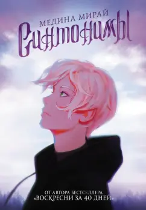
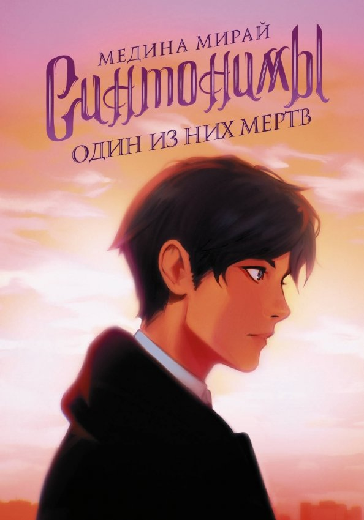
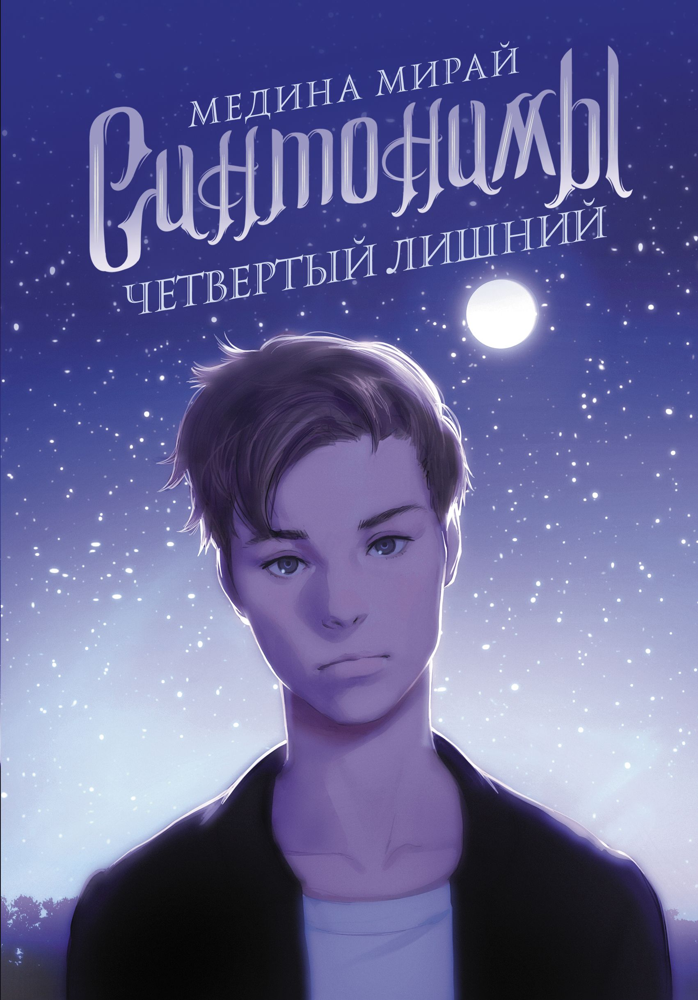
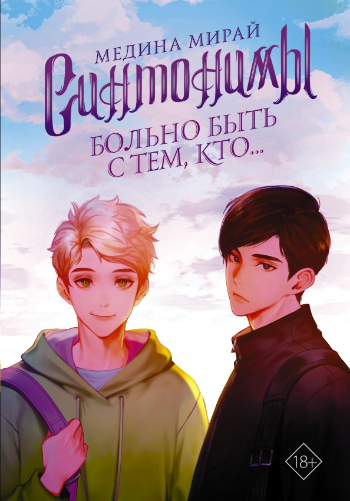

Серия "Синтонимов" состоиз из 4 книг:
- "Синтонимы"
- "Синтонимы. Один из них мертв"
- "Синтонимы. Четвертый лишний"
- "Синтонимы. Больно быть с тем, кто..."
Первая книга:
В мире, где у каждого человека есть уникальный дар, обычные люди без способностей зовутся синтонимами.
Бесполезные сами по себе, они могут стать грозным оружием в чужих руках.
Ангела и его друг Рейден оканчивают школу элементов имени святой Мелани, и на итоговом экзамене им предстоит узнать свою доминирующую способность.
Накануне экзамена школу сотрясает новость - среди учеников есть потенциальный синтоним.
Пока не начались проверки, Ангела должен срочно придумать, как ему сдать экзамен и сохранить свою тайну.
Но правда всплывает наружу в самый неподходящий момент…
Вторая книга:
Прошло совсем немного времени с тех пор, как Ангела и его друг Рейден обезвредили главу опасной организации "ЗПН", разыскивающей синтонимов.
Но жизнь ребят не успевает вернуться в прежнее русло: у Рейдена и его отца внезапно ухудшается здоровье, Ангелу начинают посещать странные предчувствия, а его новая подруга Минда определенно что-то скрывает.
Вдобавок на носу свадьба Рейдена и Найси, вот только у будущих супругов ни дня не проходит без скандала.
В таких непростых обстоятельствах друзьям предстоит разобраться с новыми способностями Ангелы, снова столкнуться лицом к лицу с "ЗПН" - и постараться остаться в живых…
Третья книга:
Друзья резделились.
Теперь каждый преследует свои цели.
Райден пытается освободить сестру Найси и разрабатыает хитроусмный план.
Рискуя своей жизнью, он проникает во вражескую организацию ПН и получает первое задание - поймать третьего искусственно выведенного синтонима.
Тем временем Ангела ищет спасение от смерти в Лесу Мерцаний, но в итоге оказывется перед очень сложным выбором:
прежде чем что-то получить от Леса, нужно отдать взамен нечто равное.
Что же принести в жертву, если на кону собственная жизнь?
Четвертая книга:
Ангелу съедает чувство вины за смерть близких и терзает страх быть непонятым.
Рейдена мучает тайна, которую он хранил несколько лет даже от тех, кому доверял больше всего.
Они вместе прошли через множество испытаний. Казалось, ничто неспособно разрушить их дружбу.
Но даже лучшие друзья могут отдалиться, если скрывают друг от друга самую главную правду, в которой боятся признаться не только окружающим, но и самим себе.